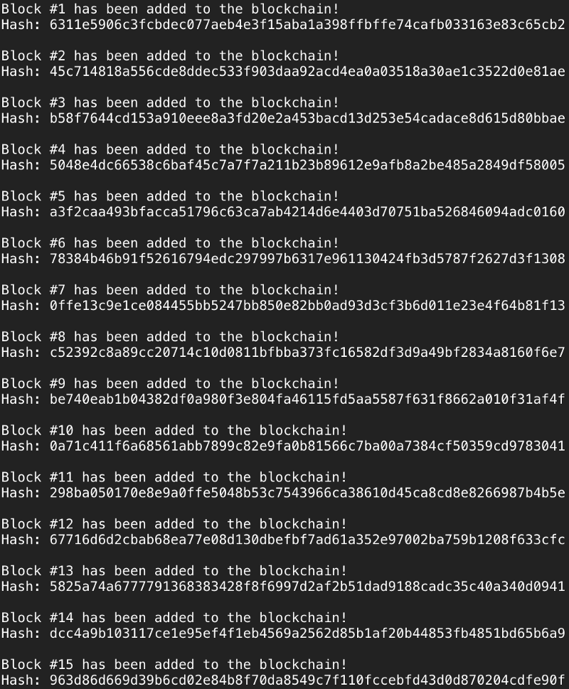

Простейший блокчейн своими руками
https://t.me/nuancesprog August 24, 2017
Как понять что такое блокчейн? Нужно его сделать. В этой статье мы построим маленькую цепочку блоков и узнаем на практике как работает блокчейн.
Блокчейн – это цифровая система учета, в которой сделанные в биткоине или другой криптовалюте транзакции хранятся хронологически и публично.
Другими словами, это публичная база данных, в которой новые данные записываются в специальные контейнеры, называемые блоками. А те, в свою очередь, записываются в цепочку таких же блоков. Получается, буквально, цепочка блоков или блокчейн (block chain).
Для начала, определим как будет выглядеть наш блок. Обычно, блок состоит из временной метки, самих данных и, опционально, индекса. Для большей уверенности в транзакциях мы будем использовать и временную отметку и индекс. В цепочку блоков записываются не сами данные, а их хэш – строка данных, зашифрованная с помощью криптографического алгоритма. Кроме самого блока, хэшируется еще и хэш прошлого блока. Таким образом, каждый новый хэш-блок в нашем блокчейне будет состоять из временной метки, индекса, данных и хэша прошлого блока. Сами данные могут быть чем угодно.
import hashlib as hasher
class Block:
def __init__(self, index, timestamp, data, previous_hash):
self.index = index
self.timestamp = timestamp
self.data = data
self.previous_hash = previous_hash
self.hash = self.hash_block()
def hash_block(self):
sha = hasher.sha256()
sha.update(str(self.index) +
str(self.timestamp) +
str(self.data) +
str(self.previous_hash))
return sha.hexdigest()
Мы описали структуру блока, но еще не создали блокчейн. Как мы уже выяснили, в каждом новом блоке записан предыдущий. Но откуда берется взяться первому блоку? Первый блок в блокчейне называется genesis block’ом. Это специальный блок, который добавляется либо в ручную, либо посредством дополнительно описанной логики в программе блокчейна.
Для удобства, напишем функцию, которая будет добавлять genesis block. Этот блок будет содержать индекс 0, произвольные данные и произвольный хэш «предыдущего» блока.
import datetime as date
def create_genesis_block():
# Manually construct a block with
# index zero and arbitrary previous hash
return Block(0, date.datetime.now(), "Genesis Block", "0")
Теперь, когда у нас есть функция для генерации самого первого блока, создадим функцию для добавлению в цепочку новых блоков. Функция будет принимать предыдущий блок цепи в качестве параметра, создавать данные для генерируемого блока и возвращать новый блок с соответствующими данными. Когда новый блок хэширует информацию предыдущего, целостность и проверяемость цепочки возрастает с каждым новым блоком. Это необходимо для повышения безопастности данных нашего блокчейна. Если этого не делать, на блокчейн будет проще воздействовать извне, подменяя старые блоки и, таким образом, «меняя прошлое».
def next_block(last_block):
this_index = last_block.index + 1
this_timestamp = date.datetime.now()
this_data = "Hey! I'm block " + str(this_index)
this_hash = last_block.hash
return Block(this_index, this_timestamp, this_data, this_hash)
Самое сложное на этом закончено, можем создать блокчейн. В нашем случае блокчейн будет простым списком в Python. Первым элементом списка будет genesis block, а далее он будет заполнен сгенерированными блоками. Поскольку мы делаем простой пример, пусть наш блокчейн будет состоять из 20 блоков. Заполним цепочку простым for-циклом.
# Create the blockchain and add the genesis block
blockchain = [create_genesis_block()]
previous_block = blockchain[0]
# How many blocks should we add to the chain
# after the genesis block
num_of_blocks_to_add = 20
# Add blocks to the chain
for i in range(0, num_of_blocks_to_add):
block_to_add = next_block(previous_block)
blockchain.append(block_to_add)
previous_block = block_to_add
# Tell everyone about it!
print "Block #{} has been added to the blockchain!".format(block_to_add.index)
print "Hash: {}\n".format(block_to_add.hash)
Запустим .py-файл и посмотрим, что получилось.

Чтобы вырастить цепочку блоков, сопоставимую с блокчейном современного биткоина, нам понадобится усложнить нашу программу. Например, добавить серверный уровень для отслеживания изменений цепочек блоков на множестве машин и лимитировать возможность добавления блоков в определенный период.
Перевод статьи "Let’s Build the Tiniest Blockchain"